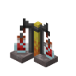

🧰
红石的小站
🎨

MC 药水酿造表
基础药水 + 材料 → 效果、等级、时长、喷溅与滞留
配一瓶
基础药水
水瓶
粗制的药水（水瓶 + 下界疣）
浓稠的药水
平凡的药水
主材料
变体（可叠加）
🔴 红石 · 延时
✨ 萤石 · 强化
💣 火药 · 喷溅
🐉 龙息 · 滞留
🕷️ 发酵蜘蛛眼 · 腐化
🧪
—
效果
—
等级
—
时长
—
形态
—
—
📋 复制结果
清空变体
全部配方表（加在粗制的药水上）
材料
得到
基础
红石延时
萤石强化
「基础」列的时长是普通可饮用药水的时长；加火药变喷溅时长不变，再加龙息变滞留后效果时长约为原来的 1/4。
💡 使用说明：所有效果药水都要先做
粗制的药水
（水瓶 + 下界疣）。把糖、闪烁的西瓜之类直接丢进水瓶只会得到
平凡的药水
，没有效果；浓稠的药水（水瓶 + 萤石粉）和普通的药水都酿不出东西。 唯一的例外是
虚弱
：发酵蜘蛛眼直接加在水瓶上（Java 版加在粗制的药水上无效）。 腐化只收录确认的几条：迅捷/跳跃 → 缓慢、治疗/中毒 → 伤害、夜视 → 隐身。 延长时间是原版固定值（3:00 → 8:00、1:30 → 4:00、0:45 → 1:30），不是统一翻倍；标「—」的项目原版没有该变体或时长说法不一。
数据基于 Java 版 1.20+，基岩版可能有差异。